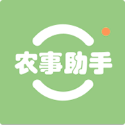

<!DOCTYPE html>
<html>

	<head>
		<meta charset="utf-8">
		<title>农事助手</title>
		<meta name="viewport" content="width=device-width, initial-scale=1,maximum-scale=1, user-scalable=no">
		<meta name="apple-mobile-web-app-capable" content="yes">
		<meta name="apple-mobile-web-app-status-bar-style" content="black">
		<link rel="stylesheet" href="../libs/css/mui.min.css">
		<link rel="stylesheet" href="../libs/css/mui.picker.min.css" />
		<link rel="stylesheet" href="../libs/css/mui.dtpicker.css" />

		<link rel="stylesheet" href="../css/comm.css">
		<style type="text/css">
			.addicon {
				color: #6EC73E;
				position: absolute;
				top: 50%;
				margin-top: -12px;
				right: 15px;
			}
			.addicon span {
				font-size: 16px;
				padding-left: 5px;
			}
			.edit-item {
				background: #fff;
			}
			.mbtenpx-list .mui-table-view-cell {
				background: #efeff4;
			}
			.mbtenpx-list .mui-table-view-cell {
				margin-bottom: 0;
			}
			.disabled-color {
				color: #CCCCCC !important;
			}
		</style>

	</head>

	<body>
		<div id="app"></div>
		<script type="text/x-template" id="indexTpl">
			<div>
				<div class="mui-content">
					<div class="mui-input-group mbtenpx">
						<div class="mui-input-row">
							<a v-if="saveType == 0" class="mui-navigate-right" @tap="selectBase"></a>
							<label>基地</label>
							<span class="fr select-text mui-ellipsis" style="width: 60%;display: inline-block;text-align: right;" id="baseResult" @tap="selectBase" v-if="saveType == 0">请选择(必填) </span>
							<span class="fr select-text mui-ellipsis" style="width: 60%;display: inline-block;text-align: right;" id="baseResult" v-else>请选择(必填) </span>
						</div>
						<div class="mui-input-row">
							<a class="mui-navigate-right"></a>
							<label>采收人</label>
							<span class="fr select-text" id="recoveryUserResult" @tap="selectRecoveryUser">请选择(必填) </span>
						</div>
						<div class="mui-input-row">
							<a class="mui-navigate-right"></a>
							<label>采收时间</label>
							<span class="fr select-text" @tap="datePicker">{{recoveryData.recoveryTime}}</span>
						</div>
						<div class="mui-input-row">
							<a v-if="saveType == 0" class="mui-navigate-right"></a>
							<label>采收入库</label>
							<span class="fr select-text mui-ellipsis" id="warehouseResult" @tap="selectWarehouse" v-if="saveType == 0">请选择(必填) </span>
							<span class="fr select-text mui-ellipsis" id="warehouseResult" v-else>请选择(必填) </span>
						</div>
						<div class="mui-input-row">
							<a class="mui-navigate-right"></a>
							<label>经办人</label>
							<span class="fr select-text" id="HandleUserResult" @tap="selectHandleUser">请选择(必填) </span>
						</div>
					</div>
					<div class="mui-input-group mbtenpx">
						<div class="mui-input-row textarea-row">
							<label>备注</label>
							<textarea placeholder="请输入 " v-model="recoveryData.remark"></textarea>
						</div>
					</div>

					<div class="mui-input-group mbtenpx">
						<div class="mui-input-row bfc">
							<label>采收作物</label>
							<span class="fr mui-icon mui-icon-plus addicon" @tap="toRecoveryCrop">
								<span>添加</span>
							</span>
						</div>
						<ul class="mui-table-view mbtenpx-list">
							<li class="mui-table-view-cell mui-media" v-for="d in recoveryDetailData">
								<div class="mui-row">
									<div class="mui-col-xs-8">
										
										<div class="mui-media-body">
											<span class="fruit-name" style="font-size: 16px;width: 82%;">{{d.templateName}}</span>
											<p class='mui-ellipsis'>品种: <span class="blue-text">{{d.varietiesName}}</span></p>
											<p class='mui-ellipsis'>种植时间: {{d.plantingTime}}</p>
											<p class='mui-ellipsis'>产出品：{{d.produceName}}</p>
										</div>
									</div>
									<div class="mui-col-xs-4">
										<p class='mui-ellipsis'>采收部位：{{d.part}}</p>
										<p class='mui-ellipsis' v-if="d.unitName != 'KG'">规格：{{d.netWeight}}{{'KG/' + d.unitName || ''}}</p>
										<p class='mui-ellipsis' v-else>规格：无</p>
										<p class='mui-ellipsis'>数量：{{d.quantity}}{{d.unitName || ''}}</p>
										<p class='mui-ellipsis'>单价：{{d.price}}元/{{d.unitName || ''}}</p>
										<p class='mui-ellipsis'>保质期：{{d.validity+'天'}}</p>
										<p class='mui-ellipsis'>等级：{{d.grade == 1?'特等':d.grade == 2?'一等':'二等'}}</p>
									</div>
								</div>
								<div class="mui-row edit-item">
									<h6 class="mui-col-xs-6">地块 {{d.acreName}}</h6>
									<h6 class="mui-col-xs-3"><span class="mui-icon mui-icon mui-icon-compose" @tap="toCustomCrop(d)"></span><span @tap="toCustomCrop(d)">编辑</span></h6>
									<h6 class="mui-col-xs-3" v-if="saveType == 0"><span class="mui-icon mui-icon mui-icon mui-icon-trash" @tap="deleteAddListByAddListId(d.plantId)"></span><span @tap="deleteAddListByAddListId(d.plantId)">删除</span></h6>
									<h6 class="mui-col-xs-3 disabled-color" v-else><span class="disabled-color mui-icon mui-icon mui-icon mui-icon-trash"></span><span @tap="deleteAddListByAddListId(d.plantId)">删除</span></h6>
								</div>
							</li>
						</ul>
					</div>
				</div>
			</div>
		</script>

		<script src="../libs/js/mui.min.js"></script>
		<script src="../libs/js/mui.picker.min.js"></script>
		<script src="../libs/js/mui.dtpicker.js"></script>
		<script src="../libs/js/vue.min.js"></script>
		<script src="../js/comm.js"></script>

		<script>
			var vm = new Vue({
				el: '#app',
				template: indexTpl,
				data: function() {
					return {
						saveURL: '',
						saveType: 0, //0新增1编辑2查看
						loginUserInfo: JSON.parse(localStorage.getItem('loginUserInfo')),
						// 必填验证
						check: true,
						// 保存参数
						paramObj: {
							recoveryData: '',
							recoveryDetailData: '',
							userId: JSON.parse(localStorage.getItem('loginUserInfo')).userId, //		当前登录人Id
							username: JSON.parse(localStorage.getItem('loginUserInfo')).username, //		当前登录人名称
							enterpriseId: JSON.parse(localStorage.getItem('loginUserInfo')).enterpriseId, //		企业Id
						},
						// 采收主表信息（json数据）
						recoveryData: {
							recoveryTime: '请选择(必填) ',
							baseId: '', //	基地Id
							recoveryUserId: '', //采收人Id
							warehouseId: '', //	入库Id
							handleUserId: '', //	处理人Id
							remark: '',
						},
						// 采收作物明细（json数据）
						recoveryDetailData: [],
						// 基地选择列表
						baseList: [],
						// 采收人选择列表
						handleUserList: [],
						// 经办人选择列表
						recoveryUserList: [],
						// 采收入库选择列表
						warehouseList: [],

					}
				},
				mounted: function() {
					var vm = this;
					this.getBaseList();
					this.getRecoveryUserList();
					this.getWarehouseList();
					// 接收单个或者批量采收数据
					mui.plusReady(function() {
						var self = plus.webview.currentWebview();
						var titleView = self.getNavigationbar();
						if(!titleView) {
							titleView = plus.webview.getLaunchWebview().getNavigationbar();
						}
						//开启回弹
						self.setStyle({
							bounce: "vertical",
							bounceBackground: "#ffffff",
						});
						// 绘制添加按钮
						titleView.drawText('保存', {
							top: "10px",
							right: "10px",
							height: "24px"
						}, {
							align: 'right',
							color: '#fff',
							size: '17px'
						});
						// 是否拦截View控件的触屏事件
						titleView.interceptTouchEvent(true);
						// 下一步点击事件
						titleView.addEventListener("click", function(e) {
							var x = e.clientX;
							if(x > 300) {
								vm.save();
							}
						})

						/**
						 * 获取编辑采收参数
						 */
						if(self.editItem) {
							vm.saveType = 1;
							vm.recoveryData.recoveryId = self.editItem.recoveryId
							// 获取基础信息
							getDataList(APIURL + 'business/recovery/queryRecoveryList', {
								recoveryId: self.editItem.recoveryId,
								pageSize: -1,
								enterpriseId: vm.loginUserInfo.enterpriseId
							}, function(d) {
								if(d && d.aaData && d.aaData.length > 0) {
									// 基础信息 
									vm.recoveryData.recoveryTime = self.editItem.operationDate
									vm.recoveryData.baseId = self.editItem.baseId
									vm.recoveryData.recoveryUserId = self.editItem.recoveryUserId
									vm.recoveryData.warehouseId = self.editItem.warehouseId
									vm.recoveryData.handleUserId = self.editItem.handleUserId
									vm.recoveryData.remark = self.editItem.remark
									document.getElementById('baseResult').innerHTML = d.aaData[0].baseName
									document.getElementById('recoveryUserResult').innerHTML = d.aaData[0].recoveryUsername
									for(var i in vm.warehouseList) {
										if(vm.warehouseList[i].value == d.aaData[0].warehouseId) {
											document.getElementById('warehouseResult').innerHTML = vm.warehouseList[i].text
										}
									}
									document.getElementById('HandleUserResult').innerHTML = d.aaData[0].handleUsername
								}
							})

							/**
							 * 获取明细
							 */
							getDataList(APIURL + 'business/recoveryDetail/queryByConditionsAndPage', {
								recoveryId: self.editItem.recoveryId,
								enterpriseId: vm.loginUserInfo.enterpriseId
							}, function(d) {
								if(d && d.aaData && d.aaData.length > 0) {
									vm.recoveryDetailData = d.aaData
								}
							})
						}

						/**
						 * 获取编辑明细返回的参数
						 */
						window.addEventListener('editback', function(e) {
							for(var i in vm.recoveryDetailData) {
								if(vm.recoveryDetailData[i].plantId == e.detail.paramObj.plantId) {
									vm.recoveryDetailData[i].templateId = e.detail.paramObj.templateId;
									vm.recoveryDetailData[i].templateName = e.detail.paramObj.templateName;
									vm.recoveryDetailData[i].plantingTime = e.detail.paramObj.plantingTime;
									vm.recoveryDetailData[i].acreName = e.detail.paramObj.acreName;
									vm.recoveryDetailData[i].acreId = e.detail.paramObj.acreId;
									vm.recoveryDetailData[i].produceId = e.detail.paramObj.produceId;
									vm.recoveryDetailData[i].produceName = e.detail.paramObj.produceName;
									vm.recoveryDetailData[i].part = e.detail.paramObj.part;
									vm.recoveryDetailData[i].netWeight = e.detail.paramObj.netWeight;
									vm.recoveryDetailData[i].unitId = e.detail.paramObj.unitId;
									vm.recoveryDetailData[i].unitName = e.detail.paramObj.unitName;
									vm.recoveryDetailData[i].quantity = e.detail.paramObj.quantity;
									vm.recoveryDetailData[i].price = e.detail.paramObj.price;
									vm.recoveryDetailData[i].validity = e.detail.paramObj.validity;
									vm.recoveryDetailData[i].grade = e.detail.paramObj.grade;
									vm.recoveryDetailData[i].varietiesId = e.detail.paramObj.varietiesId;
									vm.recoveryDetailData[i].varietiesName = e.detail.paramObj.varietiesName;
								}
							}
						});

						/**
						 * 获取添加返回的参数
						 */
						window.addEventListener('addback', function(e) {
							for(var i in e.detail.recoveryDetailData) {
								vm.recoveryDetailData.push(e.detail.recoveryDetailData[i])
							}
						});
					})
				},
				methods: {
					/**
					 * 保存
					 */
					save: function() {
						var vm = this;

						for(var i in vm.recoveryDetailData) {
							vm.recoveryDetailData[i].editable = true;
						}

						if(vm.saveType == 0) { //新增保存
							vm.saveURL = APIURL + 'business/recoveryDetail/createRecoveryRecords'
						} else if(vm.saveType == 1) { //编辑保存
							vm.saveURL = APIURL + 'business/recoveryDetail/updateRecoveryRecords'
						}
						// 封装保存参数
						vm.paramObj.recoveryDetailData = JSON.stringify(vm.recoveryDetailData);
						vm.paramObj.recoveryData = JSON.stringify(vm.recoveryData);

						// 必填字段
						var checkArr = ['基地:baseId', '采收人:recoveryUserId', '操作时间:recoveryTime', '采收入库:warehouseId', '经办人:handleUserId'];
						for(var i in checkArr) {
							if(vm.recoveryData[checkArr[i].split(':')[1]] == '' || vm.recoveryData[checkArr[i].split(':')[1]] == '请选择(必填) ') {
								mui.alert('请填写' + checkArr[i].split(':')[0]);
								check = false;
								return false;
							} else {
								check = true;
							}
						}

						if(vm.recoveryDetailData.length == 0) {
							mui.alert('请添加采收作物');
							return false;
						}

						// 提交接口
						if(vm.check) {
							getDataList(vm.saveURL, vm.paramObj, function(d) {
								if(d && d.state === 0) {
									mui.toast('保存成功');
									var list = plus.webview.currentWebview().opener();
									mui.fire(list, 'refresh');
									var ws = plus.webview.currentWebview();
									plus.webview.close(ws);
									mui.openWindow({
										url: 'recovery_list.html',
										id: 'recovery_list',
									})
								} else {
									mui.toast('保存失败');
								}
							})
						}
					},
					/**
					 * 添加作物
					 */
					toRecoveryCrop: function() {
						// 先判断是否有选择基地
						if(vm.recoveryData.baseId == '') {
							mui.alert('请先选择基地！');
							return false;
						}
						var baseResult = document.getElementById('baseResult').innerHTML;
						mui.openWindow({
							url: 'recovery_wait_list.html',
							id: 'recovery_wait_list',
							styles: {
								titleNView: { // 窗口的标题栏控件
									titleText: baseResult + "采收作物",
									backgroundColor: "#70C93E",
									titleColor: "#fff",
									autoBackButton: true,
									titleSize: "18px",
								}
							},
							extras: {
								selectedList: vm.recoveryDetailData,
								selectedBaseId: vm.recoveryData.baseId
							}
						})
					},
					/**
					 * 删除新增列表
					 * @param {Object} id
					 */
					deleteAddListByAddListId: function(id) {
						var vm = this;
						for(var i in vm.recoveryDetailData) {
							if(vm.recoveryDetailData[i].plantId == id) {
								vm.recoveryDetailData.splice(i, 1)
							}
						}
					},
					/**
					 * 编辑采收作物
					 * @param {Object} id
					 */
					toCustomCrop: function(d) {
						mui.openWindow({
							url: 'recovery_custom_crop.html',
							id: 'recovery_custom_crop',
							extras: {
								recoveryDetailData: d,
								baseId: this.recoveryData.baseId,
								saveType: this.saveType
							}
						})
					},
					/**
					 * 选择基地
					 */
					selectBase: function() {
						var vm = this;
						var userPicker = new mui.PopPicker();
						var userResult = document.getElementById('baseResult');
						// 切换基地情况已选择切换前基地的作物
						vm.recoveryDetailData = [];
						userPicker.show(function(items) {
							userResult.innerText = items[0].text;
							vm.recoveryData.baseId = items[0].value;
							console.log(vm.recoveryData.baseId)
						});
						userPicker.setData(vm.baseList);
					},
					/**
					 * 选择采收人
					 */
					selectRecoveryUser: function() {
						var vm = this;
						var userPicker = new mui.PopPicker();
						var userResult = document.getElementById('recoveryUserResult');
						userPicker.show(function(items) {
							userResult.innerText = items[0].text;
							vm.recoveryData.recoveryUserId = items[0].value;
							console.log(vm.recoveryData.recoveryUserId)
						});
						userPicker.setData(vm.recoveryUserList);
					},
					/**
					 * 选择经办人
					 */
					selectHandleUser: function() {
						var vm = this;
						var userPicker = new mui.PopPicker();
						var userResult = document.getElementById('HandleUserResult');
						userPicker.show(function(items) {
							userResult.innerText = items[0].text;
							vm.recoveryData.handleUserId = items[0].value;
							console.log(vm.recoveryData.handleUserId)
						});
						userPicker.setData(vm.handleUserList);
					},
					/**
					 * 选择仓库
					 */
					selectWarehouse: function() {
						var vm = this;
						var userPicker = new mui.PopPicker();
						var userResult = document.getElementById('warehouseResult');
						userPicker.show(function(items) {
							userResult.innerText = items[0].text;
							vm.recoveryData.warehouseId = items[0].value;
							console.log(vm.recoveryData.warehouseId)
						});
						userPicker.setData(vm.warehouseList);
					},
					/**
					 * 时间选择器
					 * @param {Object} type
					 */
					datePicker: function(type) {
						var vm = this;
						//首先获取到当前的年月日
						var cdate = new Date();
						var s = cdate.getSeconds();
						var year = cdate.getFullYear();
						var month = cdate.getMonth() + 1;
						var day = cdate.getDate();
						var h = cdate.getHours(); //获取小时
						var m = cdate.getMinutes(); //获取分钟
						var s = cdate.getSeconds(); //获取秒
						if(s < 10) {
							s = '0' + s
						}
						if(m < 10) {
							m = '0' + m
						}
						var dtPicker = new mui.DtPicker({
							type: 'datetime',
						});
						dtPicker.show(function(rs) {
							if(compareDate(rs.text, cdate)) {
								mui.alert('采收时间不应大于当前时间，请重新选择采收时间！');
								return false;
							} else {
								vm.recoveryData.recoveryTime = rs.text;
							}
							dtPicker.dispose();
						})
					},
					/**
					 * 获取基地列表
					 */
					getBaseList: function() {
						var vm = this;
						getDataList(APIURL + 'business/planBase/list', {
							enterpriseId: vm.loginUserInfo.enterpriseId,
						}, function(d) {
							if(d && d.state === 0) {
								if(d.aaData) {
									for(var i in d.aaData) {
										var obj = {
											value: d.aaData[i].baseId,
											text: d.aaData[i].name
										}
										vm.baseList.push(obj);
									}
								}
							}
						});
					},
					/**
					 * 获取采收人列表
					 */
					getRecoveryUserList: function() {
						var vm = this;
						getDataList(APIURL + '/business/user/list', {
							enterpriseId: vm.loginUserInfo.enterpriseId,
						}, function(d) {
							if(d && d.state === 0) {
								if(d.aaData) {
									for(var i in d.aaData) {
										var obj = {
											value: d.aaData[i].userId,
											text: d.aaData[i].nickName
										};
										vm.handleUserList.push(obj);
										vm.recoveryUserList.push(obj);
									}
								}
							}
						})
					},
					/**
					 * 获取采收入库列表
					 */
					getWarehouseList: function() {
						var vm = this;
						getDataList(APIURL + 'business/warehouse/list', {
							enterpriseId: vm.loginUserInfo.enterpriseId,
						}, function(d) {
							if(d && d.state === 0) {
								if(d.aaData) {
									for(var i in d.aaData) {
										var obj = {
											value: d.aaData[i].warehouseId,
											text: d.aaData[i].name
										};
										if(d.aaData[i].type != 0) {
											vm.warehouseList.push(obj);
										}
									}
								}
							}
						})
					},
				}
			});
		</script>
	</body>

</html>